←

←

←
| Straße | Name | Verlauf | Länge | Kameras | Informationen |
|---|---|---|---|---|---|
| 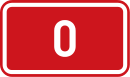 | Pražský okruh | Jesenice 3 - Třebonice 5 - Březiněves 8 - Satalice 10 - Horní Počernice 11 - Říčany 2 - Modletice 1 ← |
40,514 km | ||
|
Brněnská dálnice |
Praha 0 - Modletice 3 - Brno 2 52 - Vyškov 46 Hulín 49 55 - Přerov 55 - Lipník n.B. 35 - Bělotín 48 - Ostrava 11 - PL A1 ← |
361,291 km | ||
|
Bratislavská dálnice |
Brno 1 52 - Břeclav 55 - SK D2 ← |
60,870 km | ||
| 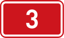 | Budějovická dálnice | Praha->Dolní Dvořiště |
Dolní Dvořiště->Praha |
||
| 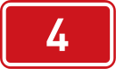 | Via Salis | Praha->Třebkov |
Třebkov->Praha |
||
| 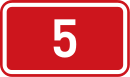 | Plzeňská dálnice | Praha->Rozvadov |
Rozvadov->Praha |
||
| 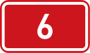 | Karlovaská dálnice | Praha->Cheb |
Cheb->Praha |
||
| 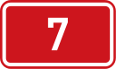 | Chomutovská dálnice | Praha->Chomutov |
Chomutov->Praha |
||
| 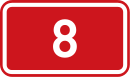 | Teplická dálnice | Praha->Petrovice |
Petrovice->Praha |
||
| 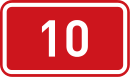 | Boleslavká dálnice | Praha->Turnov |
Turnov->Praha |
||
| 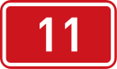 | Hradecká dálnice | Praha->Královec |
Královec->Praha |
||
| 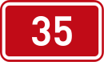 | Českomoravská dálnice | Úlibice->Lipník nad Bečvou |
Lipník nad Bečvou->Úlibice |
||
| 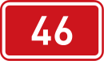 | Hánácka dálnice | Vyškov->Olomouc |
Olomouc->Vyškov |
||
| 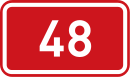 | Těšínská dálnice | Bělotín->Český Těšín |
Český Těšín->Bělotín |
||
| 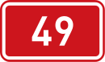 | Zlínská dálnice | Hulín->Střelná |
Střelná->Hulín |
||
| 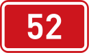 | Mikulovská dálnice | Brno->Mikulov |
Mikulov->Brno |
||
| 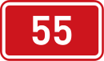 | Moravská dálnice | Olomouc->Břeclav |
Břeclav->Olomouc |
||
| 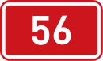 | Beskydská dálnice | Ostrava->Frýdek Místek |
Frýdek Místek->Ostrava |